require(sf)
require(mapview)
require(readr)
require(readxl)
here::i_am("r-tutorials/05-r-geospatial.qmd")
dir_data <- here::here("r-tutorials", "data")Geospatial in R - lab 1
In this lab, you will learn basic skills of working with points. We will store our points in data frames. All our points data frames will have these columns:
- longitude (x dimension)
- latitude (y dimension)
But the columns names are often shortened to lon, lat or lng, latd or anything else.
In addition they will have other info in other columns.
Create a data frame of points
library(mapview)
# Create example data of points
lon <- c(85.21, 80.23, 77.28)
lat = c(25.59, 12.99, 28.56)
names = c("Patna", "Chennai", "New Delhi")
# Create a data frame with the point data
df <- data.frame(lon, lat, names)Convert to a spatial points data frame
Core skill
Convert data frame with latitude and longitude columns to a geospatial object with a geometry column and coordinate system. We are setting the coordinate system to WGS 84 with crs = 4326.
sf::st_as_sf()function
This is a special data frame where the location data is converted to a single point object.
cities3 <- sf::st_as_sf(
df, # the data frame
coords = c("lon", "lat"), # what are the x and y dimension names
crs = 4326)Look at the class of the object
class(cities3)[1] "sf" "data.frame"Plot the points
plot(cities3)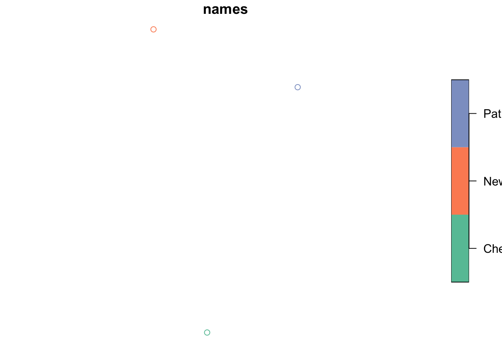
It plotted but it is not very useful. Let’s use the helper package mapview. That’s more useful.
mapview::mapview(cities3, label = cities3$names)Read in points from files
Core skill
Read in tabular data with latitude, longitude into a data frame.
readr::read_csv()orreadxl::read_excel()
from a csv file
Here I use a URL to a csv file. However I could use fil <- file.path("data", "india_tide_guages.csv") since I have the data file in a directory data in the same folder as my Quarto file (or RMarkdown or R script).
fil <- here::here("r-tutorials", "data", "india_tide_guages.csv")
df2 <- readr::read_csv(fil, show_col_types = FALSE)Convert to spatial data frame. Notice, I had to change the latitude and longitude to match the columns names in the dataframe.
sdf <- sf::st_as_sf(
df2,
coords = c("Longitude", "Latitude"), # what are the x and y dimension names
crs = 4326)Map. You can click on the points to get more info.
mapview::mapview(sdf)If you want state labels, you need to only have the geometry and label columns in the dataframe.
sdf2 <- sdf %>% select(geometry, State)
mapview::mapview(sdf2, label = sdf2$State)from Excel file
fil <- here::here("r-tutorials", "data", "india_tide_guages.xlsx")
df3 <- readxl::read_excel(fil, sheet = "Kerala")Convert to spatial points.
sdf = sf::st_as_sf(
df3,
coords = c("Longitude", "Latitude"),
crs = 4326)mapview::mapview(sdf)Using ggplot2
Here is a gallery of some basic plots you can make. There are many ways to make maps with ggplot2. I will use a single approach that is fairly flexible.
Core skill
Create a base world and India map from rnaturalearth. Plot with ggplot2.
ne_countries()ggplot() + geom_sf()coord_sf()
India alone
library(ggplot2)
library(sf)
library(rnaturalearth)
india_sf <- ne_countries(country = "India", scale = "medium", returnclass = "sf")
basemap <- ggplot() +
geom_sf(data = india_sf, color = "black", size = 2, fill="green") +
coord_sf(xlim = c(58, 98), ylim = c(6, 30))
basemap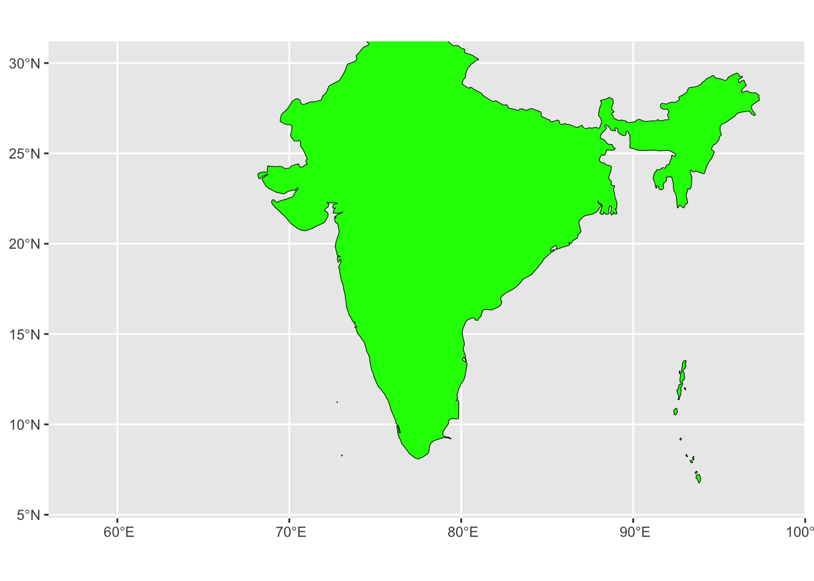
fil <- here::here("r-tutorials", "data", "india.jpeg")
ggsave(filename = fil, plot = basemap, device = "jpeg")Saving 7 x 5 in image
Core skill
Add points to a plot.
geom_sf(data=points_df)
Add points
basemap +
geom_sf(data = cities3, aes(color = names), size = 3) +
theme_void()Coordinate system already present. Adding new coordinate system, which will
replace the existing one.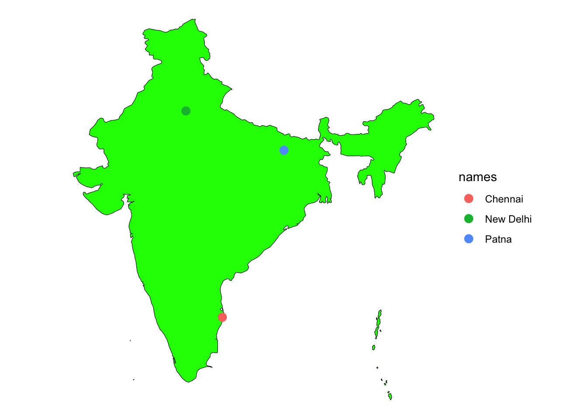
The world
library(ggplot2)
library(sf)
library(rnaturalearth)
world_sf <- ne_countries(scale = "medium", returnclass = "sf")
basemap <- ggplot() +
geom_sf(data = world_sf, color = "black", size = 0.2, fill="lightblue")
basemap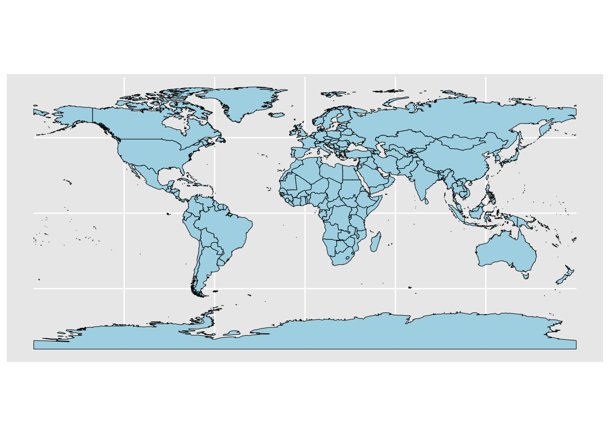
Add points
basemap +
geom_sf(data = cities3, aes(color = names), size = 1)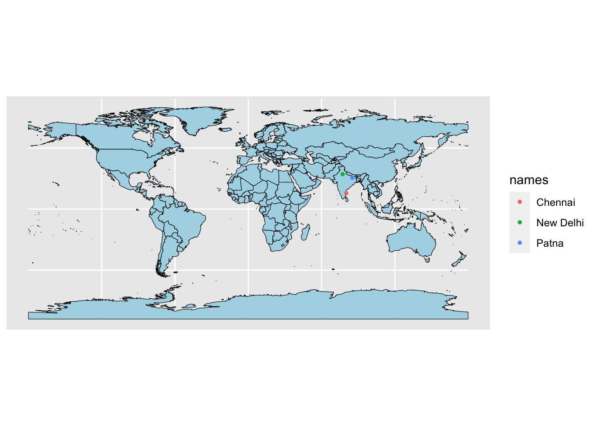
Zoom in
library(ggplot2)
library(sf)
library(rnaturalearth)
world_sf <- ne_countries(scale = "medium", returnclass = "sf")
basemap <- ggplot() +
geom_sf(data = world_sf, color = "black", size = 0.2, fill="lightblue") +
coord_sf(xlim = c(58, 98), ylim = c(0, 30))
basemap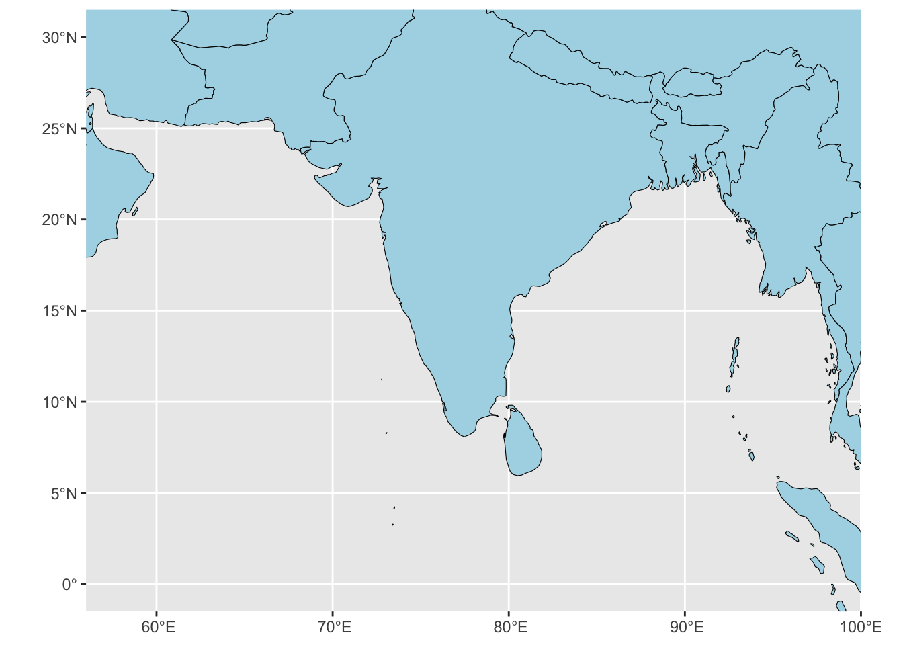
Add points
basemap +
geom_sf(data = cities3, aes(color = names), size = 2) +
coord_sf(xlim = c(58, 98), ylim = c(0, 30))Coordinate system already present. Adding new coordinate system, which will
replace the existing one.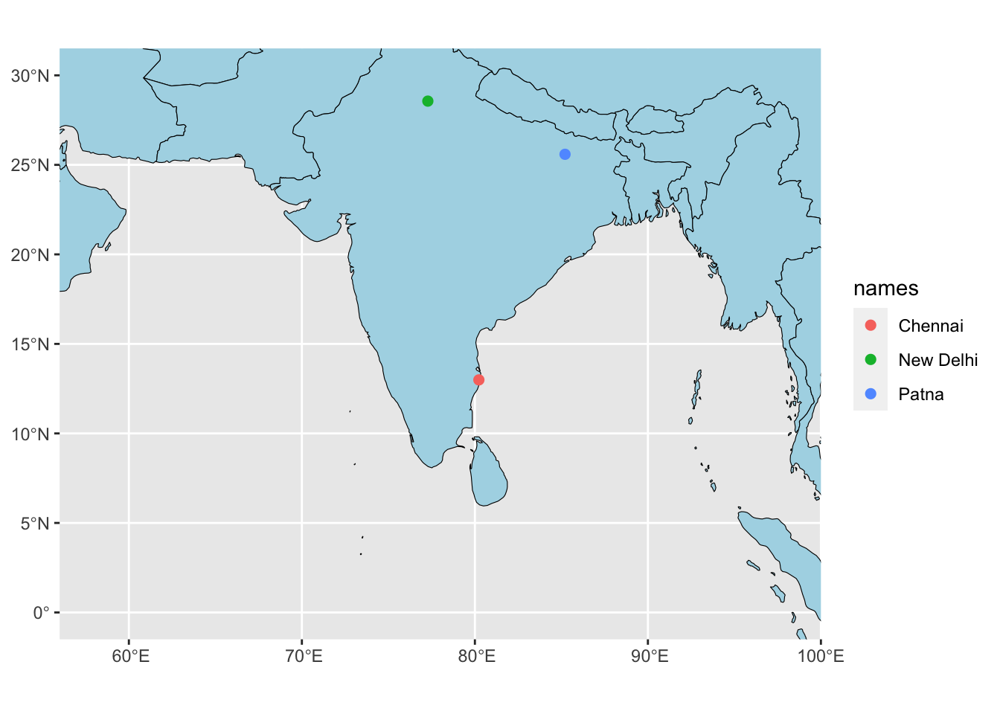
Change the projection
Core skill
Apply a coordinate reference system to a sf object.
st_transform(sf_object, crs=crs)
Common CRS’s
crs = 4326WGS 84- Robinson
crs = "+proj=robin +lon_0=0 +x_0=0 +y_0=0 +ellps=WGS84 +datum=WGS84 +units=m +no_defs" - Globe
crs = "+proj=laea +lon_0=77 +lat_0=20 +ellps=WGS84 +no_defs"
Make a world in Robinson coord system.
library(ggplot2)
library(sf)
library(rnaturalearth)
world_sf <- ne_countries(scale = "medium", returnclass = "sf")
crs <- "+proj=robin +lon_0=0 +x_0=0 +y_0=0 +ellps=WGS84 +datum=WGS84 +units=m +no_defs"
world_crs <- st_transform(world_sf, crs=crs)
basemap <- ggplot() +
geom_sf(data = world_crs, color = "black", size = 0.2, fill="lightblue") +
theme_minimal()
basemap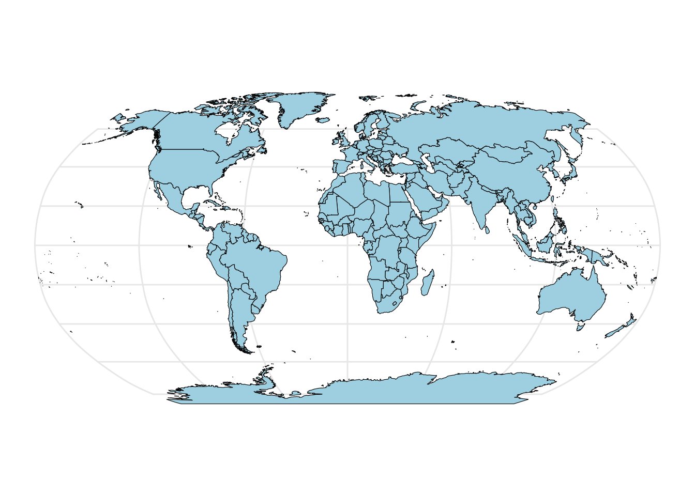
Add points.
cities3_robin <- st_transform(cities3, crs=crs)
basemap +
geom_sf(data = cities3_robin, aes(color = names), size = 2)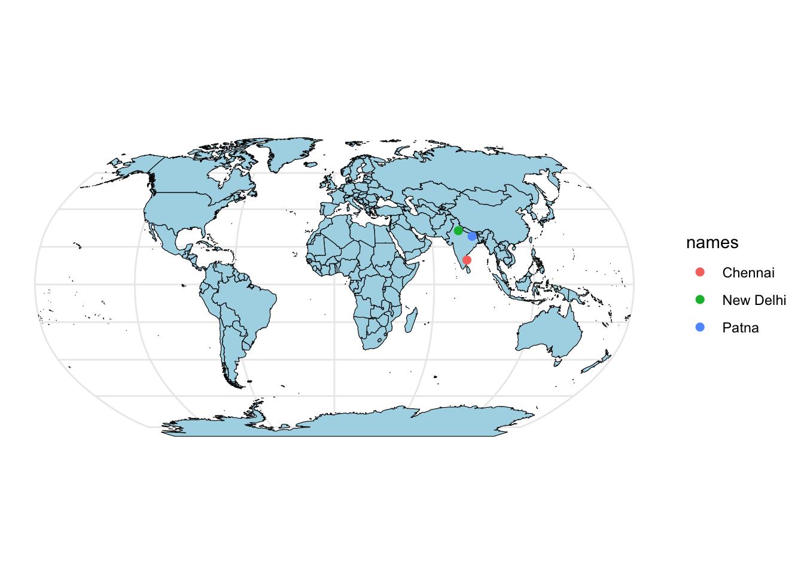
Make a globe.
library(ggplot2)
library(sf)
library(rnaturalearth)
world_sf <- ne_countries(scale = "medium", returnclass = "sf")
crs <- "+proj=laea +lon_0=77 +lat_0=20 +ellps=WGS84 +no_defs"
world_crs <- sf::st_transform(world_sf, crs)
basemap <- ggplot() +
geom_sf(data = world_crs, color = "black", size = 0.2, fill="lightblue") +
theme_minimal()
basemap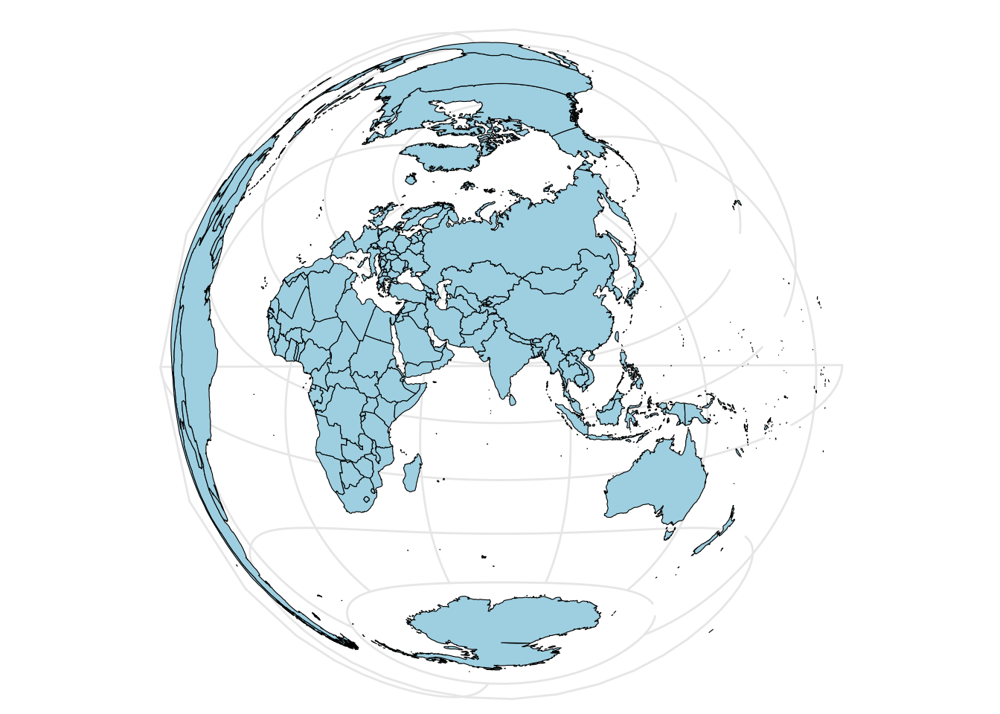
Add points.
cities3_crs <- st_transform(cities3, crs=crs)
basemap +
geom_sf(data = cities3_crs, aes(color = names), size = 2)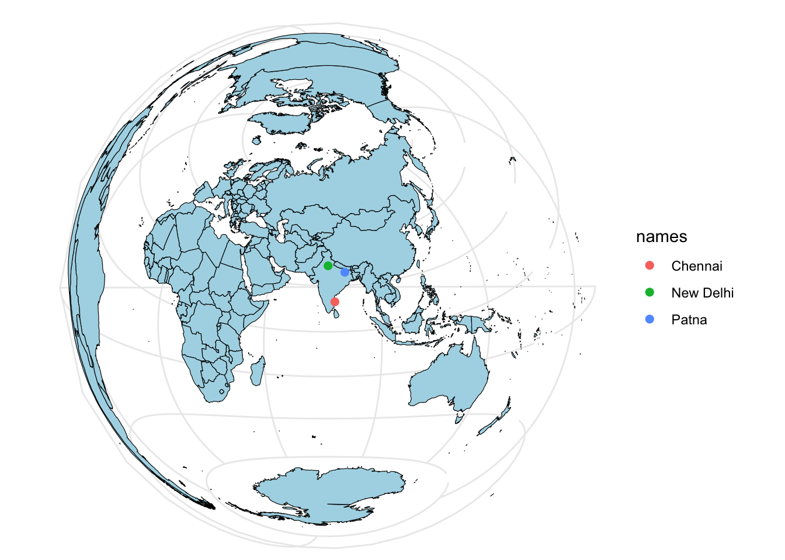
Add a circle around the globe.
library(ggplot2)
library(sf)
library(rnaturalearth)
library(dplyr)
Attaching package: 'dplyr'The following objects are masked from 'package:stats':
filter, lagThe following objects are masked from 'package:base':
intersect, setdiff, setequal, unionworld_sf <- ne_countries(scale = "medium", returnclass = "sf")
crs <- "+proj=laea +lon_0=77 +lat_0=20 +ellps=WGS84 +no_defs"
world_crs <- sf::st_transform(world_sf, crs)
sphere <- st_graticule(ndiscr = 10000, margin = 10e-6) %>%
st_transform(crs = crs) %>%
st_convex_hull() %>%
summarise(geometry = st_union(geometry))
basemap <- ggplot() +
geom_sf(data = sphere, fill = "#D8F4FF", alpha = 0.7) +
geom_sf(data = world_crs, fill="grey") +
theme_bw()
basemap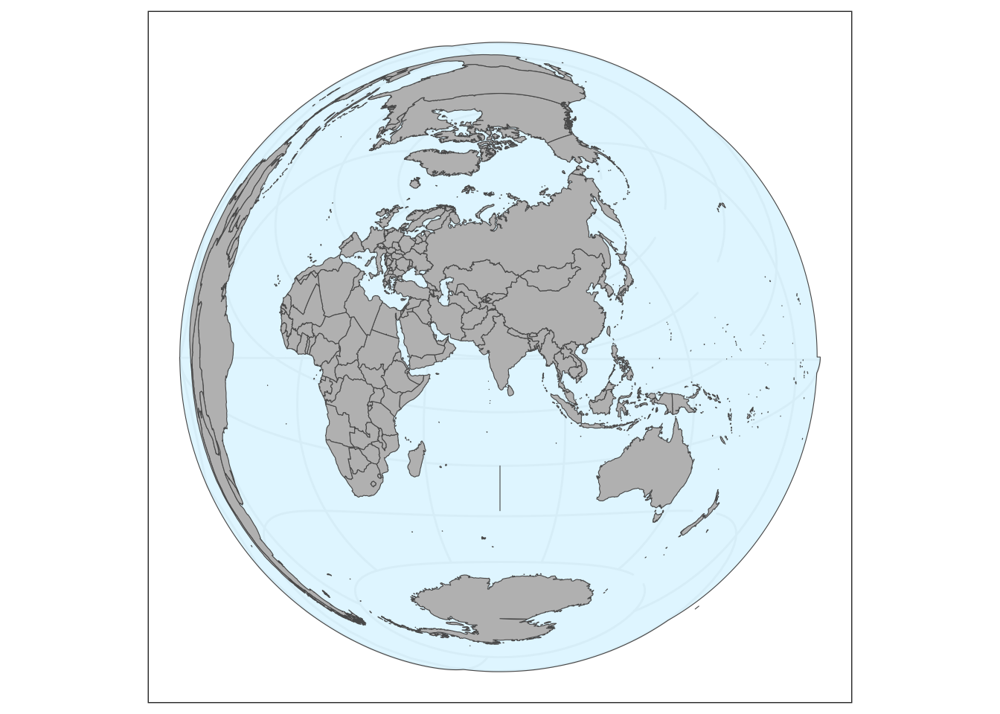
Add points and remove legend.
# Add crs
cities3_crs <- st_transform(cities3, crs=crs)
basemap +
geom_sf(data = cities3_crs, aes(color = names), size = 1) +
theme(legend.position = "none")Getting help from ChatGPT
Unfortunately, ChatGPT often gets confused with mapping and gives you code that doesn’t fully work. This can be hard for beginners (and experts) to debug.
Try telling it
- Use only the sf, rnaturalearth, and ggplot2 packages
- Work in steps, “Make a sf points object and name it sf_points”, “Using sf_points”, add these points to a map of the world.”
Your Turn!
Make some maps using mapview of your own data, data in the “r-tutorials/data” directory or data you can find on-line.
Try the layer feature to change the base map.
Advanced programmers
Try using customizing mapview to create some pretty maps of the tide guage data!
Here are some ideas
- https://www.paulamoraga.com/book-spatial/making-maps-with-r.html#mapview
- Articles tab here https://r-spatial.github.io/mapview/index.html
- This shows a nicer example of maps with ggplot https://r-spatial.org/r/2018/10/25/ggplot2-sf.html.
- Here are some examples of maps I made in R. Can you adapt the globe example to show India and add the tide guage points? https://eeholmes.github.io/30Maps/